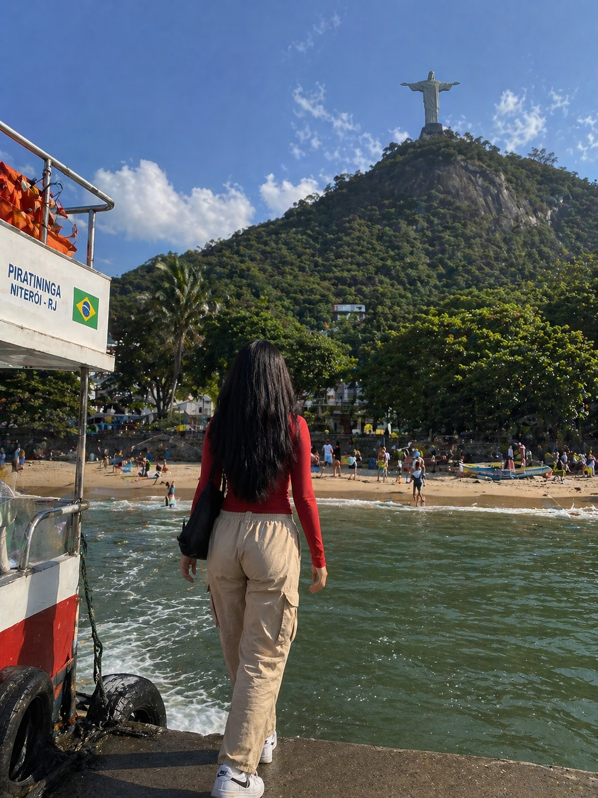

The salt of the ocean still clung to her skin as she stepped off
the small boat, its engine fading into the distance behind her.
The air in Brazil felt different—warmer, heavier, alive with unfamiliar sounds and scents.
She adjusted the strap of her bag and looked up, her eyes tracing the towering figure of Christ the Redeemer
in the distance. Even from far away,
the statue seemed to watch over everything,
arms stretched wide as if welcoming her. Alone but not afraid, she began walking,
her white shoes brushing against the sandy path
as the city slowly unfolded around her.

With each step, the noise of the shoreline softened, replaced by the hum of life in the hills beyond.
She passed vibrant walls painted in bright colors, strangers laughing, music drifting through the air.
Yet she stayed in her own quiet world, focused on the path ahead and the statue that seemed to grow
larger with every moment. There was something comforting about the journey—no destination rush, no one
to follow, just her and the road. As the sun climbed higher, casting golden light across the landscape,she felt a sense of freedom
she had never known, as if the long walk toward the statue was also a walk toward discovering herself.